library(tidyverse)
create_data <- function(N = 1000, ng = 100, seed = 1234) {
set.seed(seed)
# the model matrix
X_mm = cbind(
# a standard binary
binary_1 = sample(0:1, N, replace = TRUE),
# a relatively rare categorical
binary_2 = sample(0:1, N, replace = TRUE, prob = c(.05, .95)),
# two partly collinear numeric
mvtnorm::rmvnorm(N,
mean = rep(0, 3),
sigma = lazerhawk::create_corr(runif(3, max = .6)))
)
X_mm = cbind(
# intercept
1,
X_mm,
# a cubic effect
scale(poly(X_mm[,5], 3))[,2:3],
# interaction of binary variables
X_mm[,1]*X_mm[,2],
# interaction of binary 2 with numeric 1
X_mm[,2]*X_mm[,3]
)
# add names
colnames(X_mm) = c(
'Intercept',
'b1',
'b2',
'x1',
'x2',
'x3',
'x3_sq',
'x3_cub',
'b1_b2',
'b2_x1'
)
# coefficients
beta = c(
3.0, # intercept
.3, # b1
-.3, # b2
.5, # x1
.0, # x2
.3 , # x3
.3, # x3_sq
-.2, # x3_cub
.5, # b1_b2
-.5 # b2_x1
)
# create target variable/linear predictor
y = X_mm %*% beta
# add random effect
groups = sort(sample(1:ng, N, replace = T))
# random effect sd = .5
re = rnorm(ng, sd = .5)[groups]
# add re and residual noise with sd = 1
y = y + re + rnorm(N)
y = cbind(y, groups)
colnames(y) = c('y', 'group')
as_tibble(cbind(X_mm, y))
}NB: This post was revisited when updating the website early 2025, and some changes were required. Attempts to keep things consistent were made, but if you feel you’ve found an issue, please post it at GitHub.
Overview

Bayesian analysis takes some getting used to, but offers great advantages once you get into it. While it can be difficult to get started, it typically should not take much to repeat an analysis one is already familiar with, say a standard regression with some (common) additional complexity like a binary outcome, interactions, random effects, etc. What’s great is that Stan, a programming language for Bayesian analysis, has come a very long way, and provides a means for (relatively) fast computation. What’s more, applied analysts do not need to know the Stan programming language to do common and even notably complicated models. Packages like rstanarm and brms, coupled with additional tools like bayesplot, tidybayes, and more, make getting and exploring results even easier than the R packages one already uses.
One of the advantages of doing Bayesian analysis with these tools is that there are many ways to diagnose model issues, problems, and failures. This is great! Traditional analysis can often be notably more difficult in this regard, or at least typically has fewer ready tools to work with, and often there can be serious model deficiencies without much notification or, if there is, there might be little one can do about it. On the other hand, current Bayesian packages are providing diagnostic information as a default part of results, have ready visualizations to explore issues, and more.
This is part one of two posts on doing practical modeling with R and Stan in an applied fashion. Due to unforeseen circumstances (and plenty of procrastination), the bulk of the content of these posts was created many months before actual posting. It’s hoped that most of this will still be applicable and have the conceptual continuity as originally intended, but apologies in advance if some parts seem a little disjointed, off topic, etc.
The Stated Problem
This is all great in general. However, in consulting I saw a consistent issue among clients starting out with Bayesian analysis and Stan packages. Someone has a standard model, e.g. a basic regression or mixed model, but is getting problematic warnings, messages, or errors. When they look up how to solve this problem, the documentation, forums, and other outlets, while great resources for the initiated, often overwhelm newer and/or more applied users, as they are too technical, assume a great deal of background knowledge, are even under-explained (especially in the case of interpreting visualizations), and even suggest things that aren’t typically possible (e.g. getting better data/model). What seems a straightforward suggestion to a more advanced user or developer, may not be even close to that for many applied analysts, and they can be left a bit deflated by their experience.
In the beginning of Stan’s ascension, the majority of people using Stan/rstan were more technically inclined, coded in Stan directly, and, when problems arose, they were willing to do a lot of extra work to solve the problems (reading technical articles, developing pseudo-expertise with various techniques, and more). But tools like rstanarm and brms make running Bayesian models as easy to do as using base R functions and other non-Bayesian packages, and as Bayesian analysis has become more widely used, accepted, and presented, this has opened the Bayesian approach to practically anyone that wants to do it.
I personally don’t think one needs to be an expert in Bayesian analysis to enjoy its benefits for common models, even if difficulties come up. Nor do I think an exhaustive search through forums, technical articles, function documentation, and more is necessary to deal issues that arise often. So this is an attempt at a practical guide and one-stop shop for dealing with the most common issues that arise, interpreting results of diagnostics, and summarizing the options one can take. The goal here is to provide some practical, not perfect(!), suggestions on how to go about your applied Bayesian modeling.
Audience
Here is the presumed audience for this post:
- Wants to conduct Bayesian analysis
- Is not going to code anything in Stan directly (i.e. will use a specific package like rstanarm or brms)
- Is not a statistician, nor desires deep technical insights about Bayesian analysis (at least not yet!)
- Is already having to learn a new tool/functions/possibly a whole system of inference
- Has probably never used the
controlargument for any model
While you can do a Bayesian analysis just for the heck of it, you really need to understand a few key ideas to take advantage of what it offers. Some things you do need to know in order to use it on a basic level:
- The distributions: priors, likelihood, posterior, posterior predictive
- Iterative sampling to estimate parameters. Even a cursory understanding of maximum likelihood would probably be enough.
You can obtain this basic info from my document Bayesian Basics.
Outline
Here is what we’re going to do:
- Discuss some of the more common problems
- Explain conceptually what they indicate
- Provide quick solutions that should work most of the time
- Outline a practical approach for future endeavors (Part II)
Each section discusses a particular problem and ends with a general recommendation, and potentially, specific links to look further into the issue.
Installation issues
Your first hurdle is installation, so let’s start there. Applied users will use rstanarm, brms, or other higher level interfaces to the Stan programming language. These tools use Stan, but Stan itself requires compilation to C++. This means that to run a basic regression with brms, you’ll likely be depending on multiple languages and packages for it to work. When using these packages, here is a high-level view of how things work:
\(\rightarrow\quad\) Package interprets your R code (brms, rstanarm)
\(\quad\rightarrow\quad\) Model is translated to Stan (or use rstan with Stan code)
\(\quad\quad\rightarrow\quad\) Compiled to C++ (requires compiler)
In general, installing the package you want to use will install the appropriate dependencies, and that should be enough as far as your interactive R part goes. In some cases it may not be. If you have issues, it’s maybe best to install rstan first, then your package of choice. Issues beyond that may indicate an issue with the compiler, at which point you’ll want to consult the forums.
Mac
To be nice about it, Mac’s Catalina OS was a problematic release to say the least. For our purposes, this meant that there was a period of time where Stan wasn’t viable for many users without extensive workarounds, and issues seemingly arose with every update. This was not specific to Stan, or R, by the way1. Then R 4.0 came along and helped some things, but also resulted in new issues. That said, the Stan community were excellent at helping people here, and many of the issues were ultimately resolved by the end of 2020.
Now that Big Sur has been out for a while I get the sense that things have been better there, or at least there aren’t four separate dedicated threads trying to deal with the various problems arising. My own recent luck has been without installation issues on Macs with either OS.
Windows
I rarely had installation issues on Windows’ releases, though haven’t had to use it lately. It does require rtools to be installed, which is good to install for R with Windows anyway. If you are starting out, I would install it, then rstan, then your package of choice (e.g. brms). Again though, if you have issues, the Stan community will be very helpful.
Linux
I’ve only used Stan with Linux in a cluster computing environment. I generally have not had issues, but it’s not something I’ve done recently, and I don’t have any basic Linux desktop experience. Applied users also need cluster computing on occasion, it’s just that the problems will likely require IT support in that case. Again though, plenty of Stan folks are willing to help.
Other programming languages besides R
If you’re using Stan with Python, Stata, Julia, etc., then you’re using the Stan language directly, and you’re likely already very familiar with the forums and dealing with a variety of issues. That’s not to say that you won’t find something useful here, it’s just that I have nothing to offer you regarding those platforms specifically.
Example data
To start out, I’m going to create some data for us to run some basic models with. To make things interesting, the true underlying model has categorical and continuous covariates, interactions, nonlinear relationships, random effects (observations are clustered in groups), and some variables are collinear. You can skip these details if uninterested, but note that we will be purposely using under- and over-fitted models relative to this one to see what happens.
If you want to check that the parameters are recovered, you can run something like the following.
dat = create_data(N = 10000)
mod = lme4::lmer(y ~ . -group + (1|group), data.frame(dat[,-1]))
mixedup::summarise_model(mod, ci = FALSE) # or just summary(mod)We do not need much data for our purposes so we’ll set the total sample size to 1000. We’ll drop unnecessary columns (e.g. we’d normally specify interactions via the formula rather than create the columns explicitly), and also make our binary covariates explicit factors, which will make things easier when we want to visualize grouped effects later.
# create the primary data frame
main_df =
create_data(N = 1000) %>%
as_tibble() %>%
select(group, b1:x3, y) %>%
mutate(
b1 = factor(b1), # will help with visuals
b2 = factor(b2)
)
main_df# A tibble: 1,000 × 7
group b1 b2 x1 x2 x3 y
<dbl> <fct> <fct> <dbl> <dbl> <dbl> <dbl>
1 1 1 1 0.155 0.145 -1.84 4.01
2 1 1 1 -0.356 1.33 -0.604 3.84
3 1 1 1 -0.329 0.488 -0.441 3.37
4 1 1 1 1.08 -1.50 1.00 3.80
5 1 0 1 -0.563 -1.07 -0.150 1.81
6 1 1 1 -0.0694 -0.229 -0.387 4.54
7 1 0 1 0.374 0.606 2.04 4.17
8 1 0 1 2.06 -0.266 0.168 1.83
9 2 0 0 0.278 0.0559 1.04 1.58
10 2 1 0 0.184 0.230 0.174 3.56
# ℹ 990 more rowsEssential Steps for Practical Modeling
Once data is in hand there are basic steps to take for a practical modeling approach with Stan tools.
Use standard/default priors for the model
- For common regression models, normal or student t for the (fixed effect) coefficients. You will have to explicitly set this if using brms, but rstanarm will have viable defaults already.
- Use (half) normal/student-t for variances (esp. hierarchical models). Defaults are usually fine.
- Otherwise, look at the recommendations.
- See Part II for more on choosing priors.
Build models in increasing complexity
- It’s a good idea not to start with the ‘final’ model, especially in complex settings. If the fitting has issues with simpler models, things will only get worse with more complex models.
- Getting model settings squared away earlier will save time later (e.g. setting number of iterations, other options).
Examine convergence via Rhat, ESS, visualization
- If you run the model and get no warnings or messages, you are okay to proceed to summarize and visualize it in my opinion. Any remaining issues, e.g. poor prediction, are likely to not have obvious solutions, other than things like getting better data, adding additional covariates, revising theory, etc.
- Diagnostic plots are the main tool to explore issues that come from warnings.
Examine model effectiveness visually
There are entire packages at your disposal for visualizing model results such as bayesplot, tidybayes, etc. However, standard plots can be called from rstanarm or brms functions, which are wrappers for bayesplot functions.
Posterior predictive checks are a fundamental part of Bayesian analysis.
Avoid using approaches that are merely substitutes for the null hypothesis test you would have done in the non-Bayesian setting (e.g. using bayes factors).
Compare models using loo, posterior probabilities of models
Compare models via predictive capabilities (leave-one-out approaches, see Part II).
There is no ‘best’ model in Bayesian approach or otherwise. Consider model averaging for final predictions.
It is not necessary to automatically prefer simpler models, though it may make things easier to do so in some contexts.
Assuming you have no problems in the above process, you have more or less fulfilled the basic requirements to do standard analyses in Bayesian form. Great!
Warnings, What They Mean, and What to do About Them
Of course, if it was always that easy, we wouldn’t be posting this. There are a few warnings that you’re bound to come across at some point in modeling with the Stan ecosystem. We’ll cover these, as well as the most common solutions.
Primary reference: Brief Guide to Stan’s Warnings
Rhat & Effective Sample Size
We will start with a simple standard regression model that we know is not adequate. We will use default priors2 and run very few iterations.
# no priors, no complexity, all default settings, few iterations
library(brms)
model_start_100 = brm(
y ~ b1 + b2 + x1 + x2 + x3,
data = main_df,
iter = 100,
verbose = F,
seed = 123
)Warning: The largest R-hat is 1.1, indicating chains have not mixed.
Running the chains for more iterations may help. See
https://mc-stan.org/misc/warnings.html#r-hatWarning: Bulk Effective Samples Size (ESS) is too low, indicating posterior means and medians may be unreliable.
Running the chains for more iterations may help. See
https://mc-stan.org/misc/warnings.html#bulk-essWarning: Tail Effective Samples Size (ESS) is too low, indicating posterior variances and tail quantiles may be unreliable.
Running the chains for more iterations may help. See
https://mc-stan.org/misc/warnings.html#tail-esssummary(model_start_100) Family: gaussian
Links: mu = identity; sigma = identity
Formula: y ~ b1 + b2 + x1 + x2 + x3
Data: main_df (Number of observations: 1000)
Draws: 4 chains, each with iter = 100; warmup = 50; thin = 1;
total post-warmup draws = 200
Regression Coefficients:
Estimate Est.Error l-95% CI u-95% CI Rhat Bulk_ESS Tail_ESS
Intercept 2.72 0.15 2.44 3.00 1.10 36 144
b11 0.83 0.06 0.71 0.94 1.01 140 115
b21 -0.12 0.15 -0.41 0.15 1.10 35 82
x1 0.03 0.03 -0.04 0.09 1.00 310 239
x2 -0.04 0.03 -0.10 0.02 1.00 355 237
x3 0.28 0.03 0.22 0.35 1.04 349 132
Further Distributional Parameters:
Estimate Est.Error l-95% CI u-95% CI Rhat Bulk_ESS Tail_ESS
sigma 1.10 0.02 1.06 1.15 1.00 220 145
Draws were sampled using sampling(NUTS). For each parameter, Bulk_ESS
and Tail_ESS are effective sample size measures, and Rhat is the potential
scale reduction factor on split chains (at convergence, Rhat = 1).As is common in other R models, for factors, the effect is the stated category vs. the reference. Since we only have binary variables, b11 is show the level 1 vs. level 0 (reference) for the first binary covariate.
The warnings about Rhat and effective sample size (ESS) are likely to pop up if you use default iterations for more complex models. They mostly regard the efficiency of the sampling process, and whether you have enough samples to have stable parameter estimates. Ideally Rhat is close to 1.0, and ESS is at least a notable percentage of the total posterior samples (e.g. 50%).
The fix for these warnings is usually simple, just let the model run for more iterations beyond your warmup. The default is 2000 iterations, with warmup half of that. Warmup iterations are not used in calculation of parameter estimates, so you can just increase the number of iterations relative to it, or increase both by only increasing the iter argument.
In the following, we plot the estimated values across each iteration for each chain, called a trace plot, as well as the density plot of the values from the entire chain. From this we could see that things might be problematic (e.g. we’d want more symmetric density plots for the regression coefficients), but only if you are used to looking at these things, so it will take some practice.
mcmc_plot(model_start_100, pars = c('b1', 'b2', 'x1'), type = 'combo')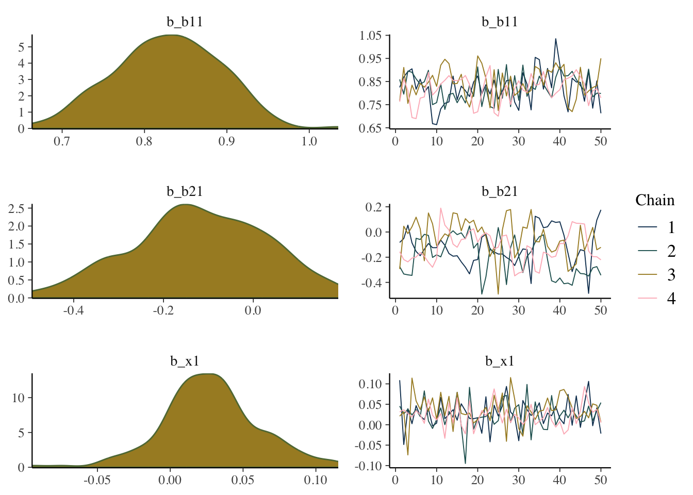
To get some intuition for what you would expect, just plot a series from a normal distribution.
ggplot2::qplot(x = 1:1000, y = rnorm(1000), geom = 'line')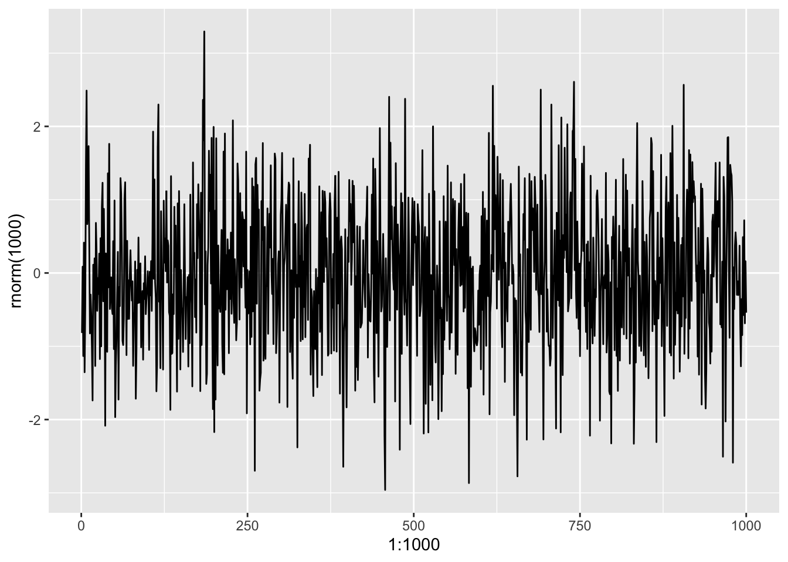
ggplot2::qplot(x = rnorm(1000), geom = 'density')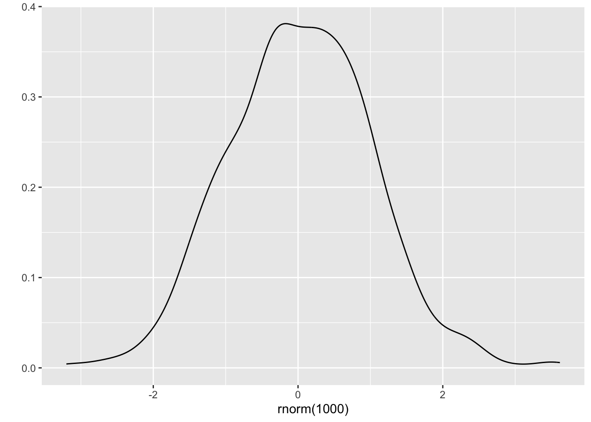
Other plots allow us to look at the same sorts of things from a different perspective, or break out results by each chain.
mcmc_plot(model_start_100, type = 'areas')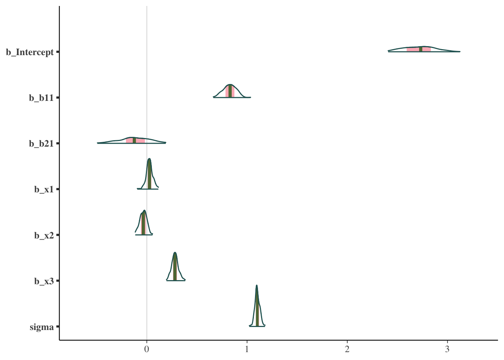
mcmc_plot(model_start_100, pars = c('b1', 'b2', 'x1'), type = 'violin')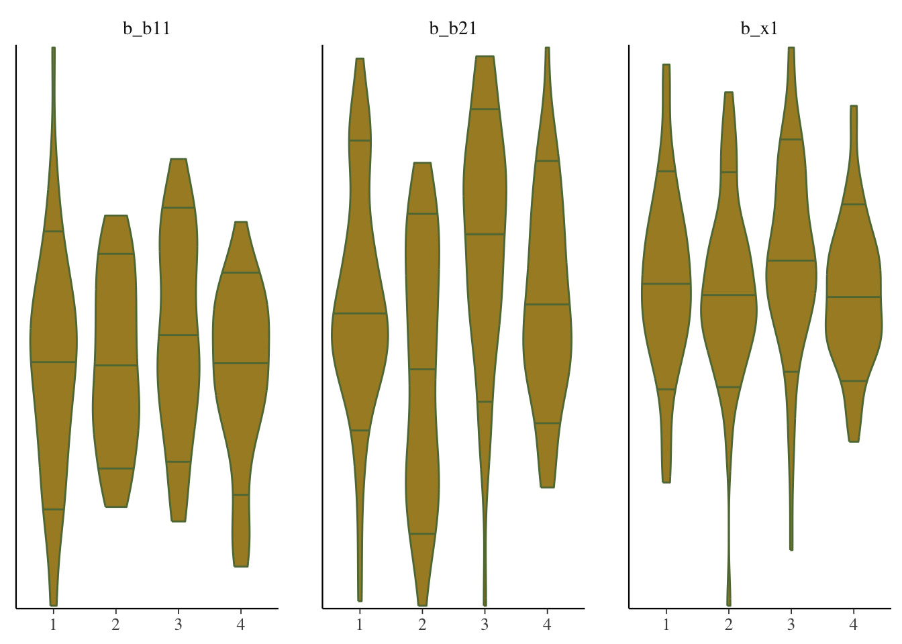
While things seem okay, if we single out a particular chain, we might think otherwise. In this case, the Intercept and b2 coefficients may be problematic, given they do not seem to vary as much as the others (chain 2 for example, but also for other chains).
mcmc_plot(model_start_100, highlight = 2, type = 'trace_highlight')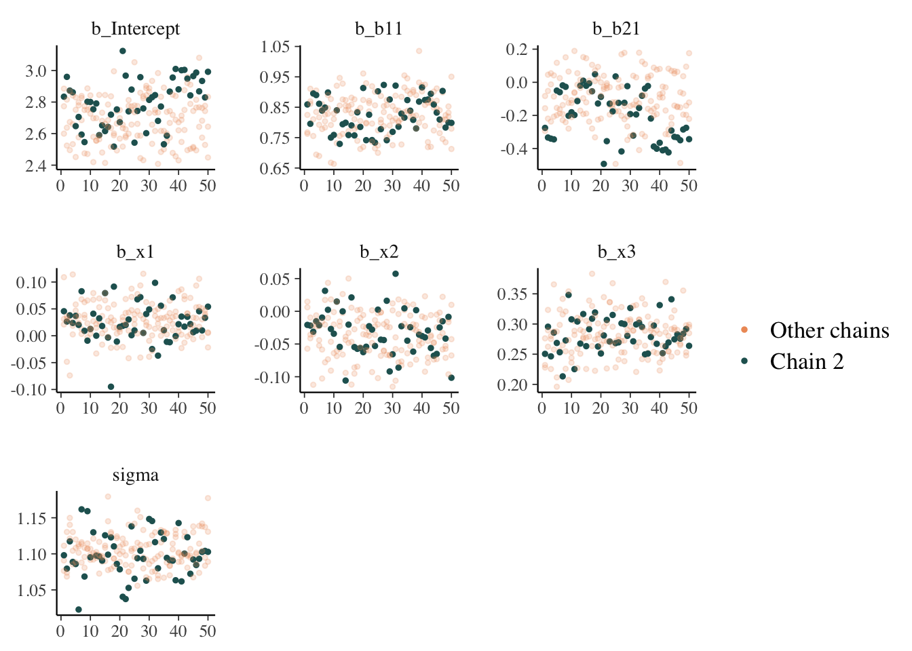
Some suggest to look at rank plots instead of traditional trace plots. Really, all we’ve changed is looking for something ‘fuzzy’, to looking for something ‘approximately uniform’, so my opinion is that it’s not much of an improvement visually or intuitively. In general, histograms, which are variants of bar charts, are rarely an improvement for any visualization. If you do use it, you can use an overlay approach to see if the ranks are mixing, but this looks a lot like what I’d be looking for from a trace plot.
mcmc_plot(model_start_100, pars = c('b1', 'b2', 'x1'), type = 'rank_hist')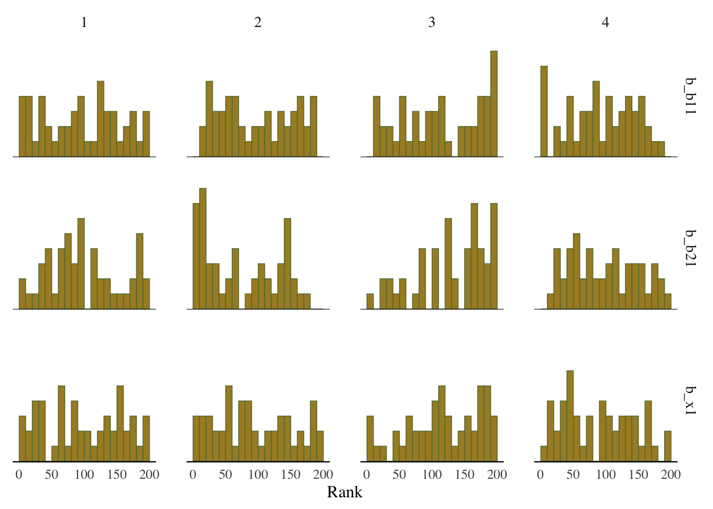
mcmc_plot(model_start_100, pars = c('b1', 'b2', 'x1'), type = 'rank_overlay')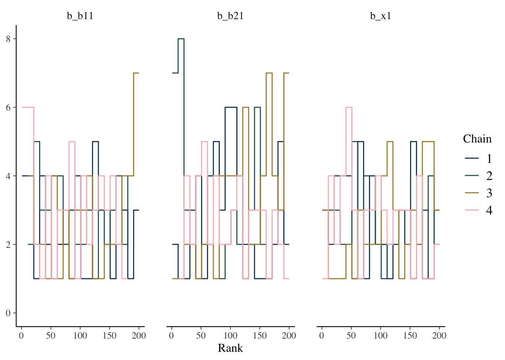
Some details
A little more detail will possibly provide additional understanding, and also some guidance, when looking at your own results.
Rhat
The \(\hat{R}\) (or Rhat) statistic measures the ratio of the average variance of samples within each chain to the variance of the pooled samples across chains. If all chains are at equilibrium, these will be the same and \(\hat{R}\) will be 1.0. If the chains have not converged to a common distribution, the \(\hat{R}\) statistic will be greater than one.
What we want: values near 1.0 (< 1 okay) and less than 1.05
mcmc_plot(model_start_100, type = 'rhat')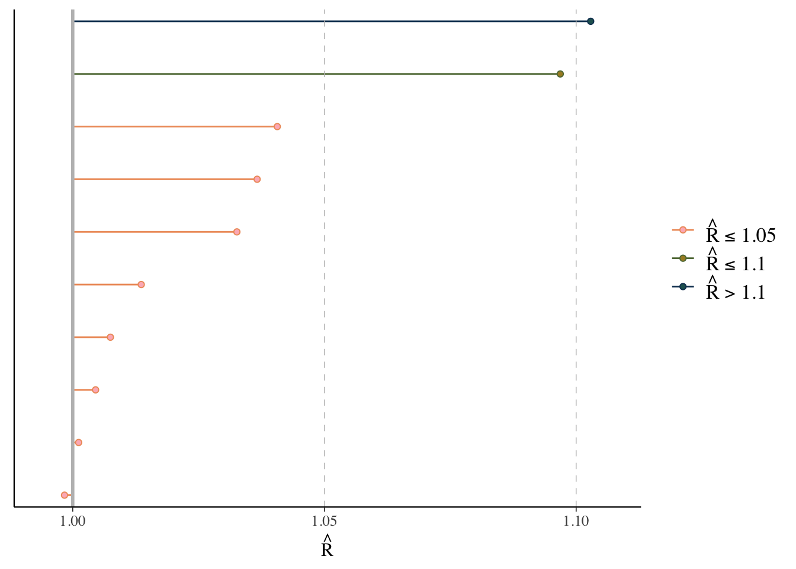
ESS
Effective sample size is an estimate of the effective number of independent draws from the posterior distribution of the parameter of interest. Because the draws within a chain are not independent if there is autocorrelation, the effective sample size will typically be smaller than the total number of iterations, but the calculation of this statistic is bit more art than science, and can even be greater than the number of posterior draws. Note also that the plot is based on slightly different values than reported by the brms summary function.
- Bulk ESS: ESS for the mean/median (
n_effin rstanarm). Tells us whether the parameter estimates are stable. - Tail ESS: ESS for the 5% and 95% quantiles. Tells us whether the interval estimates for the parameters are stable. Tail-ESS can help diagnose problems due to different scales of the chains and slow mixing in the tails.
What we want: ESS > 10% percent of total posterior samples for sure, but > 50% is best. At least 100 is desired for decent estimates of autocorrelation. For Bulk-ESS we want > 100 times the number of chains.
mcmc_plot(model_start_100, type = 'neff') # < .1 problem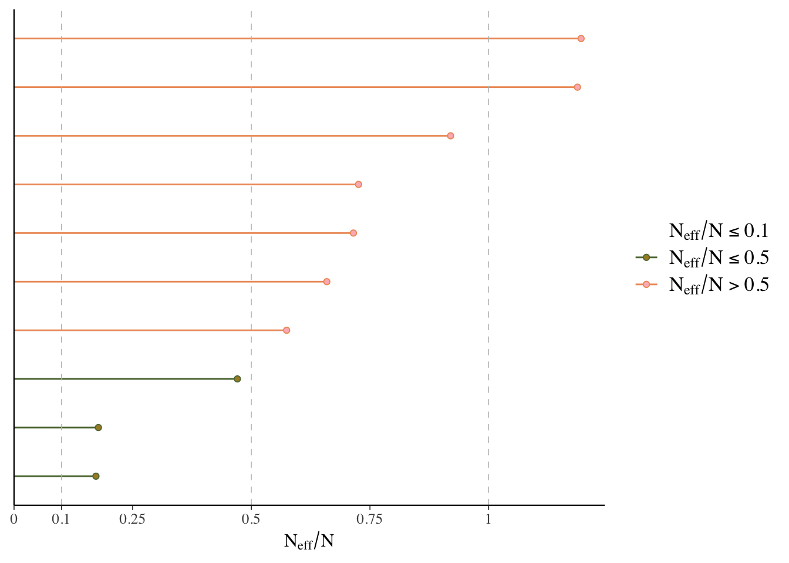
Trace plot
Shows the estimated parameter values at each iteration. In general you would like a random bouncing around an average value.
mcmc_plot(model_start_100, type = 'trace')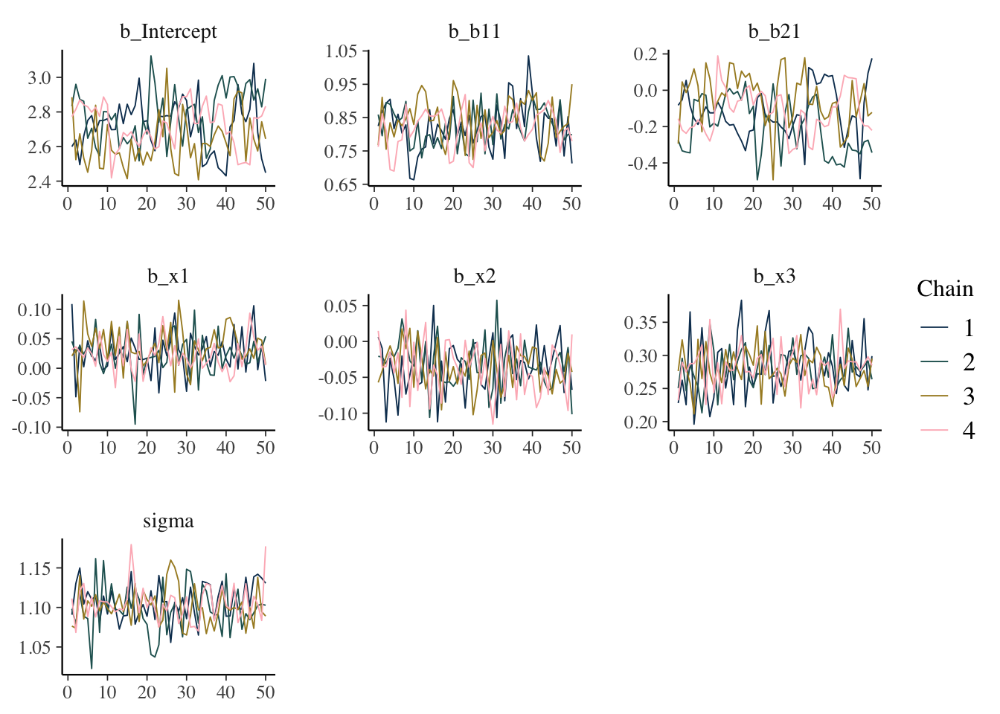
What we want: Something like random normal draws over a series. Trace plots in general should look ‘grassy’, or like a ‘fuzzy caterpillar’, which might not be very descriptive, but deviations are usually striking and obvious in my experience. If you see chains that look like they are getting stuck around certain estimates, or separating from one another, this would indicate a serious problem. If the chains are not converging with one another, you were probably already getting warnings and messages.
Density plot
Shows the density of the posterior draws for the parameters.
mcmc_plot(model_start_100, type = 'dens')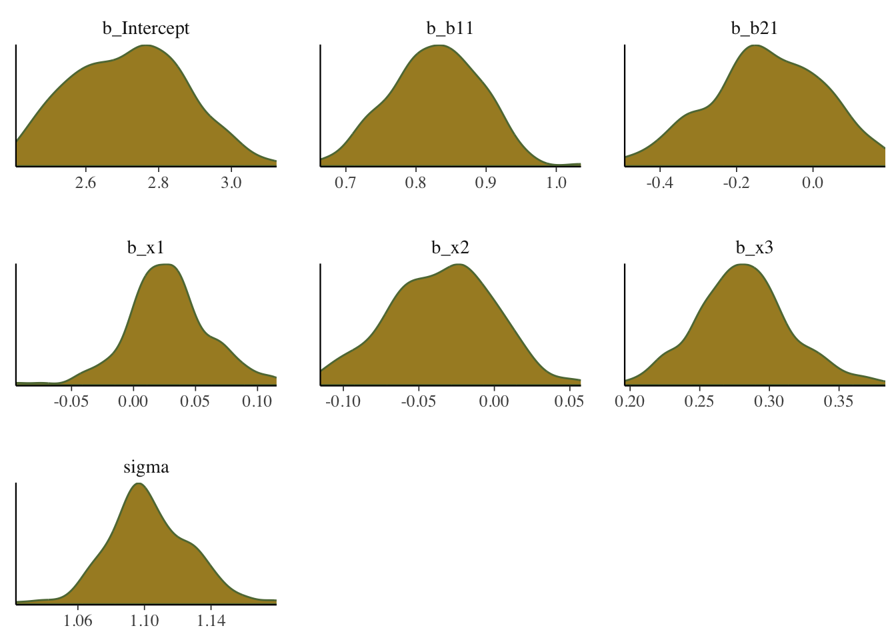
What we want: For the density plots of regression coefficients, these should be roughly normal looking. For variance parameters you may see skewness, especially if the estimate is relatively near zero with smaller data sets. In general, we would not want to see long tails or bimodality for the typical parameters of interest with models you’d be doing with rstanarm and brms.
Rank plot
From bayesplot help file:
Whereas traditional trace plots visualize how the chains mix over the course of sampling, rank histograms visualize how the values from the chains mix together in terms of ranking. An ideal plot would show the rankings mixing or overlapping in a uniform distribution.
mcmc_plot(model_start_100, type = 'rank_hist')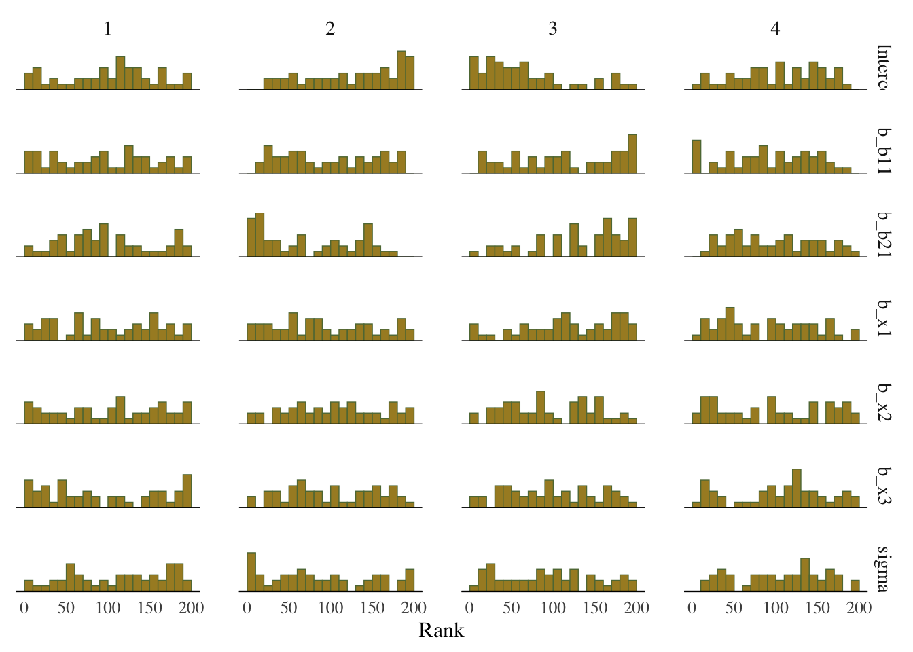
What we want: Uniform distribution, a good mixing of lines for the overlay version.
ACF plot
The acf, or autocorrelation function plot, is exactly the same thing you’d visualize for any time series. It is a plot of a series of correlations of a parameter with specific lags of itself. Autocorrelation does not bias estimates, but increased autocorrelation may suggest a more inefficient/slower exploration of the parameter space. At lag zero, the series estimates are perfectly correlated with themselves, so that’s where the plot usually starts.
What we want: Quick drop off, but not really that important. By the time you find it’s an issue, your model has already run.
mcmc_plot(model_start_100, type = 'acf')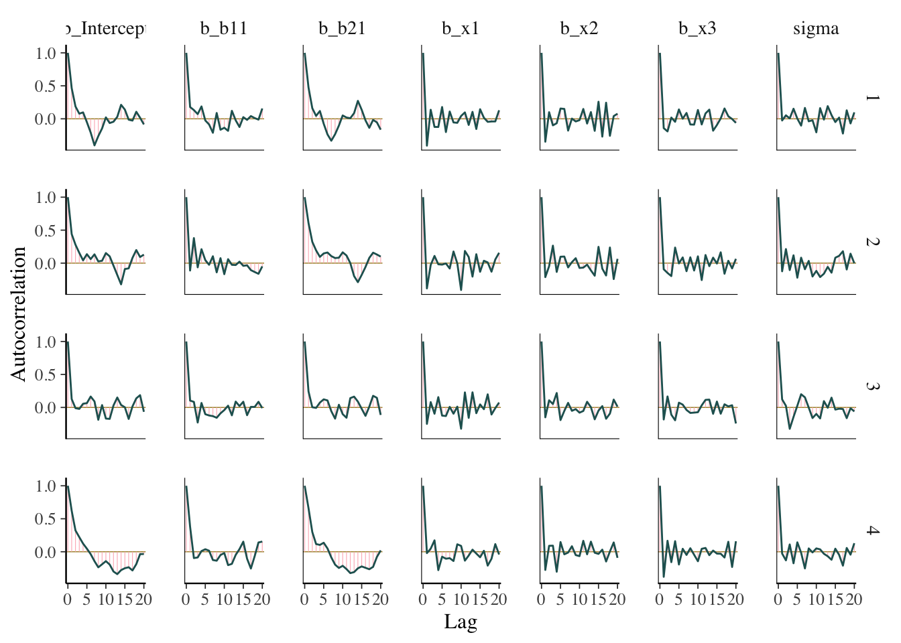
Efficiency plots
I have seen these often recommended, but I’m not aware of a package does them, though it seems they may make their way to shinystan at some point. Aki Vehtari has supplied a walk-through and some code (see the resources section below), but there isn’t really documentation for the functions, and they likely won’t work outside of rstan objects, or at least I had limited success with applying them to brms objects. Furthermore, these are getting into waters that are beyond what I’d expect applied users to be wading through.
Solution for Rhat/ESS warnings
To summarize, the general solution to Rhat and ESS warnings is simply to do more iterations (relative to the warmup). To keep posterior samples and model objects from becoming unwieldy in size3, consider thinning also. Thinning saves only a select amount of the available posterior samples. For example, setting thin = 10 means only every tenth sample will be saved. This will also reduce autocorrelation, as the draws retained after thinning are not as correlated with one another as successive draws would be. However, if you thin too much, you may not have enough for effective sample size.
# default with 4 chains, 1000 warmup 2000 total = 4*(2000 - 1000) = 4000 post-warmup draws
brm(model)
# 4*(4000 - 2000) = 8000 posterior draws
brm(model, warmup = 2000, iter = 4000)
# 4*(4000 - 2000)/8 = 1000 posterior draws
brm(model, warmup = 2000, iter = 4000, thin = 8)BFMI low
You may see a warning that says some number of chains had an ‘estimated Bayesian Fraction of Missing Information (BFMI) that was too low’. This implies that the adaptation phase of the Markov Chains did not turn out well, and those chains likely did not explore the posterior distribution efficiently. For more details on this diagnostic, you can see Betancourt’s article, but this will almost surely be too technical for many applied and even more advanced users.
In this case, the problem here is often remedied by just adding more iterations. I typically keep to 1000 posterior samples, which makes for nicer visualizations of distributions without creating relatively large model objects. However, you may need more to get a satisfactory result.
model_start = update(
model_start_100,
warmup = 2000,
iter = 2250, # 1000 posterior draws
cores = 4,
seed = 123
) In this case, we no longer have any warnings, and even one of our more problematic coefficients looks fine now.
summary(model_start) Family: gaussian
Links: mu = identity; sigma = identity
Formula: y ~ b1 + b2 + x1 + x2 + x3
Data: main_df (Number of observations: 1000)
Draws: 4 chains, each with iter = 2250; warmup = 2000; thin = 1;
total post-warmup draws = 1000
Regression Coefficients:
Estimate Est.Error l-95% CI u-95% CI Rhat Bulk_ESS Tail_ESS
Intercept 2.72 0.20 2.32 3.10 1.00 1583 938
b11 0.83 0.07 0.69 0.97 1.00 1711 895
b21 -0.12 0.20 -0.50 0.29 1.01 1509 864
x1 0.03 0.03 -0.04 0.10 1.00 1504 947
x2 -0.03 0.04 -0.11 0.05 1.00 1279 803
x3 0.28 0.04 0.21 0.35 1.00 1136 810
Further Distributional Parameters:
Estimate Est.Error l-95% CI u-95% CI Rhat Bulk_ESS Tail_ESS
sigma 1.11 0.02 1.06 1.15 1.00 1357 735
Draws were sampled using sampling(NUTS). For each parameter, Bulk_ESS
and Tail_ESS are effective sample size measures, and Rhat is the potential
scale reduction factor on split chains (at convergence, Rhat = 1).plot(model_start, par = 'b2')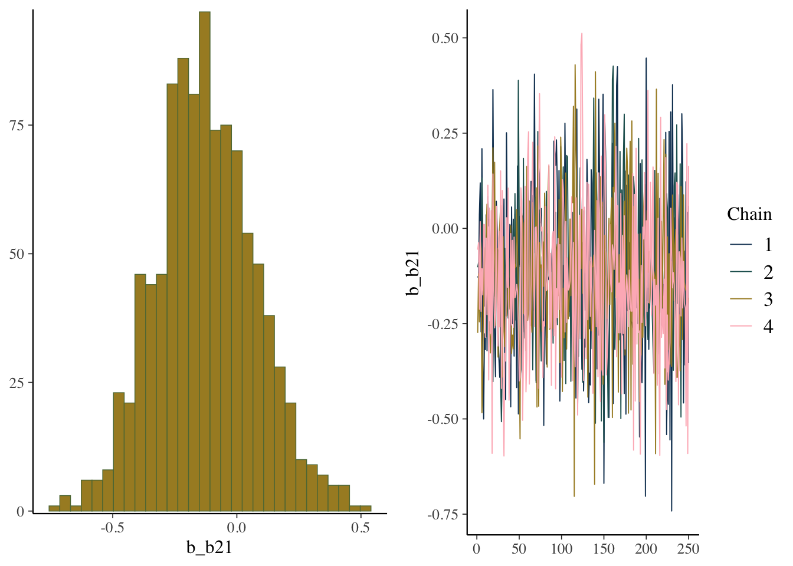
Solution for low BFMI
If there aren’t other serious problems, add more iterations to deal with low BFMI. In some cases, switching from a heavy-tailed prior (e.g. student t) to something else (e.g. normal) would be helpful, but some other approaches typically would involve having to write Stan code directly to reparameterize the model. Otherwise, you may need to approach it similarly to the problem of divergent transitions.
Tree Depth
Tree depth is a more technical warning that has to do with the details of Hamiltonian Monte Carlo. Practically speaking:
Lack of convergence and hitting the maximum number of leapfrog steps (equivalently maximum tree depth) are indicative of improper posteriors ~ Stan User Guide
Sometimes you’ll get a warning about hitting maximum tree depth, and without getting overly technical, the fix is easy enough. Just set the maximum higher.
Solution for max tree depth
Use the control argument to increase the value beyond the default of 10.
model_update_treedepth = update(
model,
control = list(max_tree_depth = 15)
)Divergent Transitions
Divergent transitions are a technical issue that indicates something may be notably wrong with the data or model (technical details). They indicate that the sampling process has ‘gone off the rails’, and that the divergent iteration’s results, and anything based on them (i.e. subsequent draws, parameter estimates), can’t be trusted. Unlike the other problems we’ve discussed, this is more difficult to navigate.
Why might this happen?
- insufficient data for the model’s complexity
- poor model
- high collinearity
- improper or otherwise problematic priors
- separability (logistic regression)
- any number of other things
As an example, I’ll make an overly complex model with only a small random sample of the data, improper priors, and use very few warmups/iterations.
model_problem = brm(
bf(
y ~ b1*b2*x1 + x2*b2 + x3*b2 + (1 + x1 + b2|group),
sigma ~ x1 + b1*b2
),
data = main_df %>% slice_sample(prop = .1),
family = student,
cores = 4,
warmup = 5,
iter = 1005,
thin = 4,
seed = 123
)Warning: There were 206 divergent transitions after warmup. See
https://mc-stan.org/misc/warnings.html#divergent-transitions-after-warmup
to find out why this is a problem and how to eliminate them.Warning: Examine the pairs() plot to diagnose sampling problemsWarning: The largest R-hat is 2.21, indicating chains have not mixed.
Running the chains for more iterations may help. See
https://mc-stan.org/misc/warnings.html#r-hatWarning: Bulk Effective Samples Size (ESS) is too low, indicating posterior means and medians may be unreliable.
Running the chains for more iterations may help. See
https://mc-stan.org/misc/warnings.html#bulk-essWarning: Tail Effective Samples Size (ESS) is too low, indicating posterior variances and tail quantiles may be unreliable.
Running the chains for more iterations may help. See
https://mc-stan.org/misc/warnings.html#tail-essSo what do we do in this case? Well let’s start with visual inspection.
Visualization: Pairs plot
A diagnostic tool that is typically suggested to look at with divergent transitions is the pairs plot. It is just a scatterplot matrix of the parameters estimates (and log posterior value), but it suffers from a few issues. The plot is slow to render even with few parameters, and simply too unwieldy to use for many typical modeling situations. If you somehow knew in advance which parameters were causing issues, you could narrow it down by only looking at those parameters. But if you knew which parameters were the problem, you wouldn’t need the pairs plot.
Another issue is that it isn’t what you think it is at first glance. The upper diagonal is not just the flipped coordinates of the lower diagonal like every other scatterplot matrix you’ve seen. The chains are split such that half are used for the above diagonal plots, and the other for the lower, with the split being based on the amount of numerical error (above or below the median). I suspect this may not help applied users interpret things, but the gist is, that if your red points show up only on the upper diagonal, changing the adapt_delta part of the control argument may help (see below), otherwise it likely won’t4.
Let’s take a look at the pairs plot anyway. I’ll use hex bins instead of standard points because the point plots have no transparency by default. In addition, we’ll use a density plot on the diagonal, instead of the histogram.
mcmc_plot(
model_problem,
pars = c('b_b11', 'b_b21', 'b_x1'),
type = 'pairs',
diag_fun = 'dens',
off_diag_fun = 'hex',
fixed = TRUE
)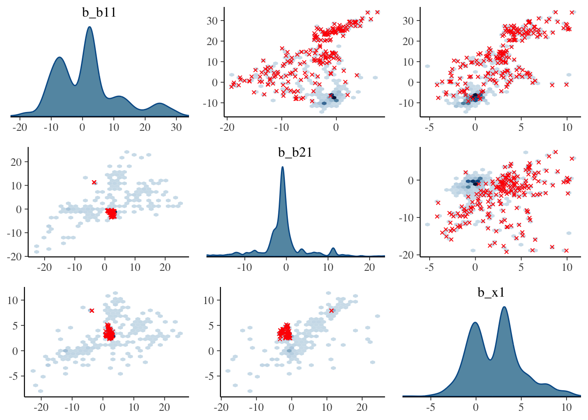
With problematic cases, what you might see on the off-diagonal plots is some sort of ‘funneling’, which would indicate where the sampler is getting stuck in the parameter space. However, this visual notion isn’t defined well, as it may be happening without being obvious, displaying just a bump, or just some weird patterns as above. But you’ll also regularly see correlated parameters, but it’s unclear whether these might necessarily be a problem in a given situation.
For the initial model we ran, the pairs plot for all parameters takes several seconds to produce, and even with the hex option, it is still difficult to parse without closer inspection. It shows the intercept and b2 parameters to be notably correlated, possibly indirectly due to the poor priors.
mcmc_plot(
model_start_100,
type = 'pairs',
off_diag_fun = 'hex',
diag_fun = 'dens'
)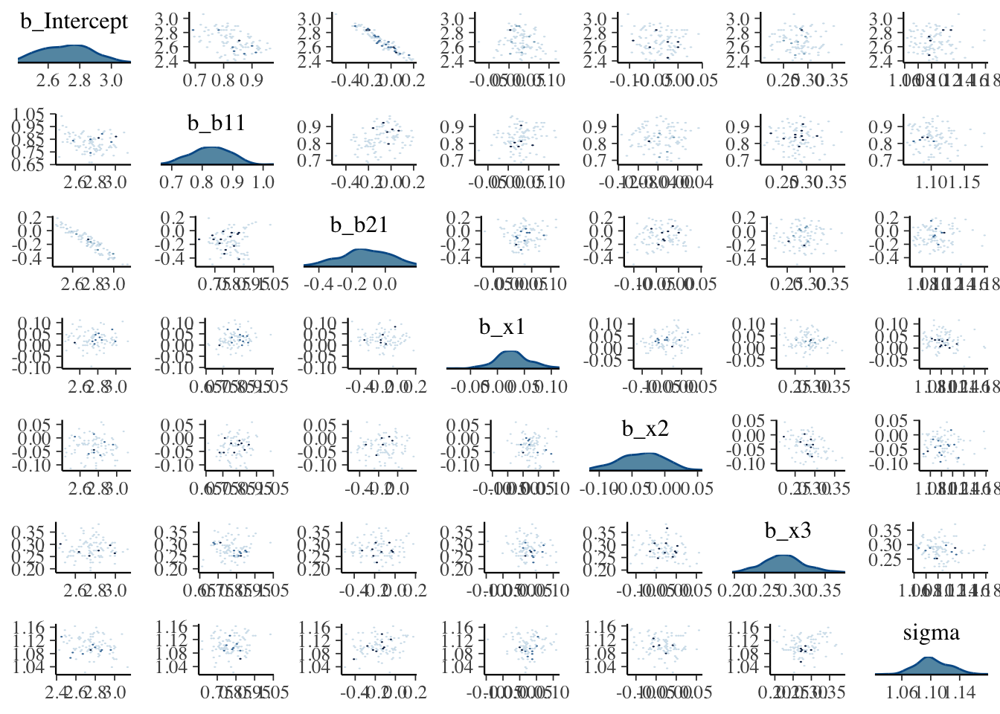
What we want: Roughly little correlation among parameters, mostly symmetric densities for typical regression parameters.
Visualization: Parallel Coordinates Plot
It is also suggested to look at parallel coordinates plots, but unfortunately there are issues with these plots as well. The order of the variable/parameter axis is arbitrary, and yet the order can definitely influence your perception of any patterns. Also, unless everything is on similar scales, they simply aren’t going to be very useful, but even if you scale your data in some fashion, the estimates given divergent transitions may be notably beyond a reasonable scale.
As in our pairs plot, we’d be looking for a pattern among the divergences, specifically a concentration for a parameter where the lines seemingly converge to a point. If this isn’t the case, the divergences are probably false positives5. I had to add some ggplot options to help this to be more legible, and you will likely have to as well. In the following, you might think the b_sigma_x1 coefficient for dispersion is a problem, which might suggest we need to rethink the prior for it. In reality it’s likely just that it’s being estimated to be near zero, as it should be, especially since non-divergent transitions are also bouncing around that value. For the most part we don’t see much pattern here.
mcmc_parcoord(
model_problem,
pars = vars(matches('^b')),
size = .25,
alpha = .01,
np = nuts_params(model_problem), # without this div trans won't be highlighted
np_style = parcoord_style_np(
div_color = "#ff5500",
div_size = 1,
div_alpha = .1
)
) +
guides(x = guide_axis(n.dodge = 2)) +
theme(
axis.text.x = element_text(size = 6),
panel.grid.major.x = element_line(color = '#00AAFF80', size = .1)
)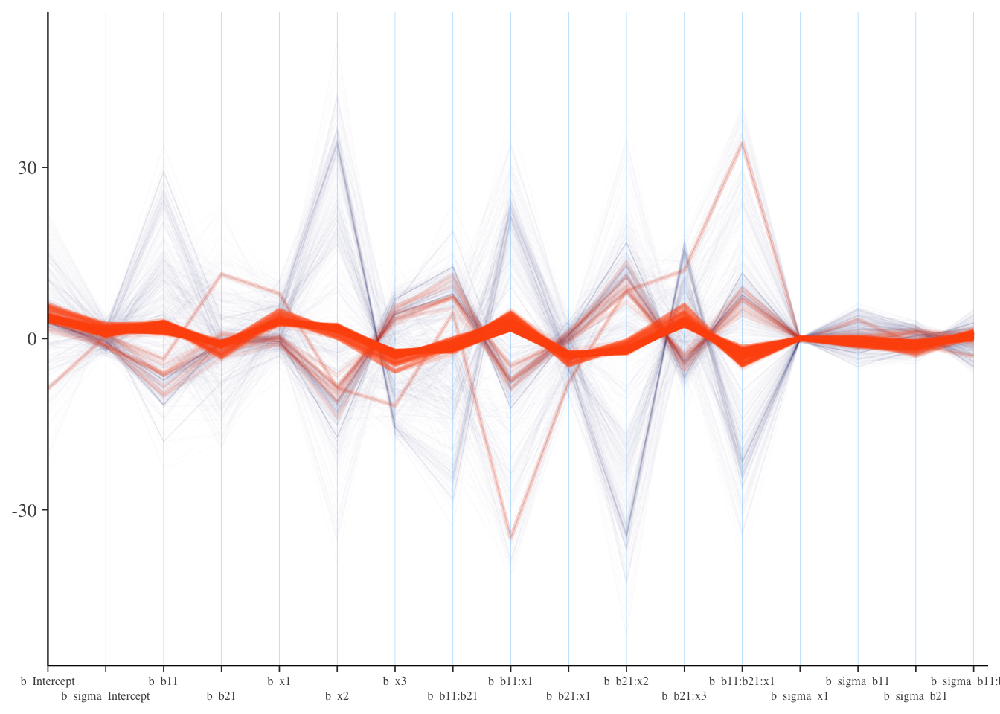
What we want: Roughly no obvious pattern. If the divergence lines are not showing any particular concentration, it could be that these are false positives.
Solution for divergent transitions
Unfortunately the solution to divergent transitions is usually not straightforward. The typical starting point for solving the problem of divergent transitions is to use the control argument to increase adapt_delta, for example, from .80 to .996, and let your model have more warmup/total iterations, which is the primary issue here. In the cases I see for myself and clients, increasing adapt_delta rarely helps, but it doesn’t hurt to try. I often will just start with it increased for more complex models, just to save messing with it later.
model = brm(..., control = list(adapt_delta = .99))Aside from that you will have to look more deeply, including issues with priors, model specification, and more. I find this problem often comes from poor data (e.g. not scaled, possible separation in logistic models, etc.), combined with a complex model (e.g. complicated random effects structure), and beyond that, the priors may need to be amended. You should at least not have uniform priors for any parameter, and as we’ll see in Part II, you can use a simulation approach to help choose better priors. Often these data and prior checks are a better approach to solving the problem than doing something after the fact. You may also need to simplify the model to better deal with your data nuances. As an example, for mixed models, it may be that some variance components are not necessary.
Some solutions offered on the forums assume you are coding in Stan directly, such as reparameterizing your model, using specific types of priors, etc. If you are writing Stan code rather than using a modeling package, you definitely need to double check it, as typos or other mistakes can certainly result in a problematic model. However, this post is for those using modeling packages, so I will not offer such remedies, and they are usually not obvious anyway.
Other messages
Certain builds of rstan for some types of settings (e.g. specific operating systems) will often have warnings or other messages. Sometimes it looks like a bunch of gobbledygook, which is typically something happening at the C++ level. If your model runs and produces output despite these messages, you can typically ignore them in most cases. Even then, you should look it up on the forums just to be sure.
Parser warnings
Parser warnings are either a deprecation warning, or another more serious kind (Jacobian). The latter will not happen if you’re using higher level interfaces (e.g. brms), rather than programming in Stan directly. The other kind, deprecation warnings, are not something you can do anything about, but the developer of the package will likely need to make minor changes to the code to avoid them in the future. I’ve never seen parser warnings from using rstanarm or brms.
Compilation warnings
Compiler warnings happen regularly and indicate something going on at the compiler level, typically that something in Stan is being compiled but not used. You can ignore these.
Package warnings
Like any good package, when things go unexpectedly, or just to be informative, modeling packages like rstanarm and brms will provide you messages or warnings. These do not have to do with the Stan part of things. For example, brms will warn you that it will drop cases with missing values.
Rows containing NAs were excluded from the model.
Some issues can be more subtle. For example, you may get a message that the model is compiling but then nothing happens. This might be because of a typo in a distribution name for your priors, or some similar goof7.
Solutions for other messages
If you are using a package to interface with Stan and not having an issue with the model (i.e. it runs, converges), these messages can largely be ignored, unless it is a warning from the package itself, which typically should be investigated.
Model Comparison Problems
For a discussion of loo and related issues, see Part II.
Other Issues
But it’s slow!
Another problem people seem to be concerned with is the speed of the analysis. If you have a lot of data, or more to the point, a lot of parameters, your model can be very slow. For standard models with rstanarm and brms, there may be no real benefit doing it Bayesian style if you have millions of data points and simpler models. If your model is only taking a couple minutes, then you really have nothing to complain about- watch some YouTube or something while it runs. If your model takes on the order of hours, work with less data or simpler models until you have your modeling code, plots, etc. squared away. At that point you can run your primary analysis and wait it out. A slow model may also be indicative of a poorly specified/understood model, so you may have to think hard about how you are approaching the problem.
Solutions for a slow model
- For any model, Bayesian or otherwise, doing things like standardizing, logging or other variable transformations will put parameters in more reasonable domains, resulting in a more manageable estimation process. For example, if you standardize predictors, then the coefficients are on similar scales and a
Normal(0, 1)prior can typically be applied. - Using more informative priors can avoid exploring areas of the posterior that aren’t going to lead to plausible results. We will show how to do this in Part II.
- Use less iterations if there are no other issues.
- If possible, work with less data or simpler models until ready for the full model.
- If possible, work with a different version of the model that can still answer the question of interest. For example, if an ordinal model is causing a lot of issues, and you’re not interested in category specific probabilities, just treat the target variable as numeric8.
- Stop fishing/p-hacking/torturing your data so that you don’t have to run dozens of models. You’re likely not to care if the models takes hours if you only run them once or twice.
shinystan
The shinystan package makes exploring model diagnostics actually fun! Using launch_shinystan on a model opens a browser window, providing interactive visualizations to help you see what’s going on with it. You can look at many of the previous plots, plus a few others we haven’t shown.
Unfortunately the documentation in the browser doesn’t really tell you what to look for in these plots. The glossary contains information that is likely overly technical for applied users, and if there is a problem, there’s not really a whole lot to go on. In addition, some plots are difficult to use (e.g. trying to assess whether overlapping histograms are similar), or are probably only useful if you have very obvious problem (e.g. lots of divergent transitions). As an example, consider the tree depth plots. What would be good here?

The documentation tells you the value should be somewhere between 0 and whatever max_treedepth is set at. If they are ‘large’, the documentation states the problem could be due to different things, but the solutions are to either reparameterize of the model (probably not possible unless using Stan code directly), or just increase the value. It doesn’t seem to tell you what those plots are supposed to look like, and unfortunately that severely limits their utility. The divergence and energy plots are similarly under-explained. Many refer users to Betancourt’s wonderful articles on the details, but these are far too technical for those not already steeped in the approach9.
All that said, luckily there is a nice walkthrough if you do have a hankering to go down that path, and provides more details on the statistics and what you should be looking for in the visualizations.
Summary: The Practical Approach to Dealing with Model Problems
For applied analysts, you can do a couple things when faced with warnings or just otherwise assessing the model integrity. I would suggest first focusing on the density and trace plots for parameters. You can then examine other visualizations that might be appropriate to the problem, and take the appropriate steps outlined above to try and solve those issues. Pay extra attention to parameters with relatively low effective sample sizes, as these are the ones the model is struggling to estimate.
Many of the problems can be solved by increasing the warmup and total number of iterations. After that, setting control parameters may be enough. For more serious issues, you may need to try different priors or even a different model. If none of the above solves your problems, you may be trying too complex of a model for your data, have a data-specific problem, or some other issue.
In general, doing Bayesian analysis can be easy, and hopefully it will be for you. Many common problems have simple solutions, and the more serious ones will only make you a better Bayesian though the efforts you take to solve them. Rather than see them as a nuisance, see them as a learning opportunity, and you’ll enjoy your results even more when you finally resolve them. Remember that you may not be in your comfort zone, and that’s okay! Things will come around eventually, and you’ll solve these problems more easily in the future!
On to PART II: Do Bayes Better.
Resources
General
Aki Vehtari’s website has demos and explanation for things like model comparison, Rhat/Neff, and more.
Jeffrey Arnold’s Bayesian Notes has nice examples of many models and good summaries otherwise.
Bayesian Basics, an applied overview of Bayesian analysis with Stan as the backdrop.
Priors
Prior Choice Recommendations by the Stan group.
Rhat/ESS
Vehtari et al. on Rank plots for details.
Vehtari’s appendix for the above (probably more accessible)
Divergence
Other warnings
Visual diagnostics
Misc
Footnotes
I will spare the details of my opinions, which are almost entirely negative.↩︎
For this model, they are uniform/improper priors for the regression coefficients and half-t for the residual variance. You can always use prior_summary on a brms model to see this.↩︎
With more posterior samples comes slower visualizations and possibly other computations.↩︎
Another issue is that you could change how the chains are split and it could potentially dramatically change the how the pattern of divergent transitions looks.↩︎
This seems counter to the common suggestion on forums and GitHub issues that even 1 divergent transition renders results suspect. I’ve never seen results meaningfully change for something with just a couple divergent transitions to one that has none, and often when there are that few, even rerunning the model will result in no divergences.↩︎
In my experience, there isn’t a need to guess some value between .80 and .99 as the time differences are typically not great, say between .9, .95, and .99, unless your model already takes a very long time. Also, if it doesn’t work at .99, it won’t at .9999 either.↩︎
I’m definitely not speaking from experience here or anything! Nomral distributions do exist, I’m sure of it! 😬↩︎
It is often suggested in the Stan world to reparameterize models. However, this advice doesn’t really apply in the case of using rstanarm or brms (i.e. where you aren’t writing Stan code directly), and it assumes a level of statistical expertise many would not have, or even if they do, the route to respecifying the model may not be obvious.↩︎
Betancourt, whose work I admire greatly, typically makes my head spin.↩︎
Reuse
Citation
BibTeX citation:
@online{clark2021,
author = {Clark, Michael},
title = {Practical {Bayes} {Part} {I}},
date = {2021-02-28},
url = {https://m-clark.github.io/posts/2021-02-28-practical-bayes-part-i/},
langid = {en}
}
For attribution, please cite this work as:
Clark, Michael. 2021. “Practical Bayes Part I.” February
28, 2021. https://m-clark.github.io/posts/2021-02-28-practical-bayes-part-i/.